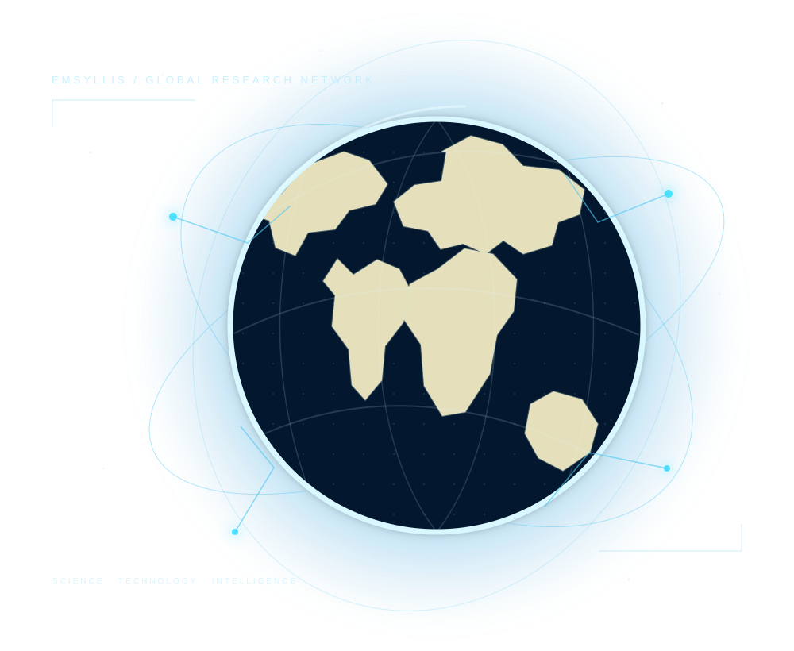
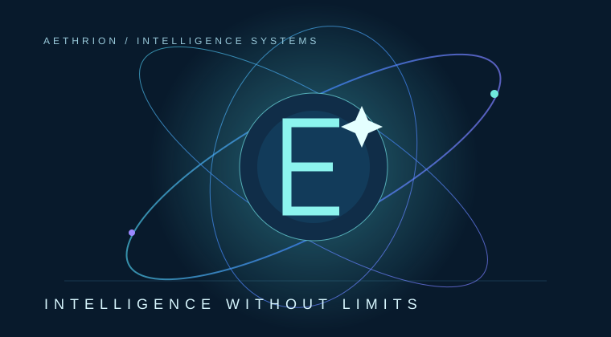
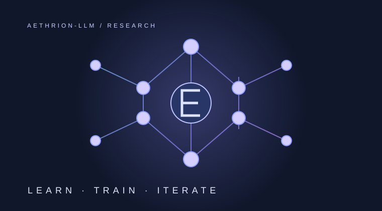

Listelenen çalışma ve araştırma projesi
EMSYLLIS / PRIVATE WORKSPACE
MEMBER ENVIRONMENT · 2026
Merhaba.
Üretmeye devam.
EMSYLLIS ekosistemindeki projelerine, hesap bağlantılarına ve kişisel çalışma alanına tek bir merkezden ulaş.

YOUR WORKSPACEOne identity.
Connected projects.
Connected projects.
SESSION STATUSOturum doğrulanıyor
01 / PERSONAL OVERVIEW
Çalışma alanın
Hesap bilgilerin yalnızca oturum açtığında görüntülenir.
E
Üye oturumu doğrulanıyor…Güvenli EMSYLLIS oturumu kontrol ediliyor
Kontrol ediliyor…Hesap oturumunun canlı doğrulaması
Bağlı uygulamalar için merkezi yönetim
Hesap ve bağlantı yönetimi araçları
02 / EMSYLLIS ECOSYSTEM
Projelerin ve çalışma alanların
Her proje kendi odağı ve kendi resmî platformuyla gelişir. İlgili çalışma alanına doğrudan geç.

01 / ARTIFICIAL INTELLIGENCE↗AETHRION
Yapay zekâ, akıllı sistemler ve üretkenlik araçları.
RESMÎ PLATFORMU AÇ ↗ 02 / DIGITAL TRUST↗
02 / DIGITAL TRUST↗SENTRIX
Dijital güven, alan adı doğrulama ve güvenlik.
RESMÎ PLATFORMU AÇ ↗ 03 / FRONTIER TECHNOLOGY↗
03 / FRONTIER TECHNOLOGY↗TdevKuantum
Kuantum teknolojileri ve yeni nesil hesaplama keşfi.
RESMÎ PLATFORMU AÇ ↗
04 / MODEL RESEARCH↗AETHRION-LLM
Türkçe odaklı dil modeli ve eğitim altyapısı araştırması.
ARAŞTIRMA ALANINI AÇ ↗03 / IDENTITY & CONNECTIONS
◎
Hesap ve uygulama merkezi
EMSYLLIS hesabını ve desteklenen proje hesaplarının bağlantı durumlarını yönet. Uygulama hesapları kendi güvenlik sınırları içinde doğrulanır.
Merkezi aç ↗04 / ACCOUNT SECURITY
⌑
Hesap güvenliğin
Şifre ve doğrulama kodlarını kimseyle paylaşma. Güvenliğinden şüphe duyduğunda parola yenileme adımlarını kullan.
Şifre sıfırlama ↗05 / THE EMSYLLIS VISION
✳
Beyond What Is Known.
Bilimsel merak, disiplinli mühendislik ve sorumlu teknoloji üretimi.
Kuruluş yaklaşımımız ↗